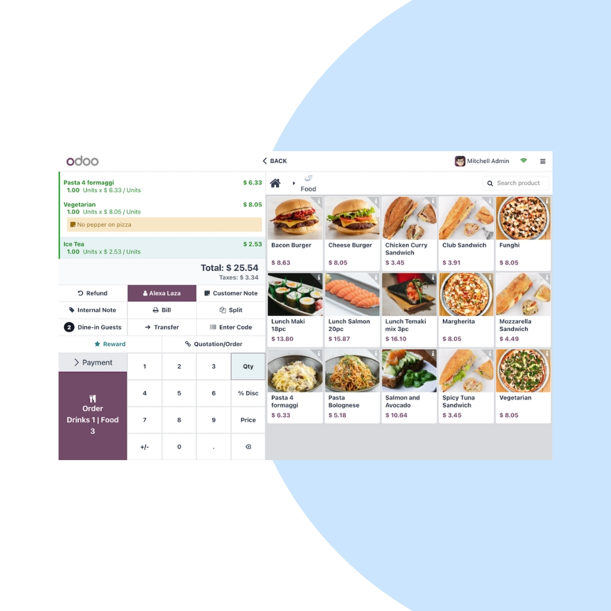
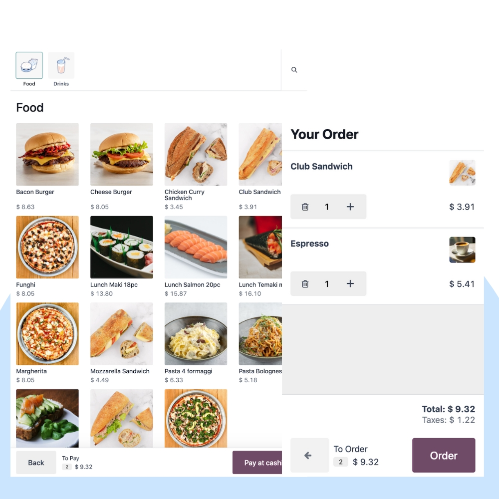
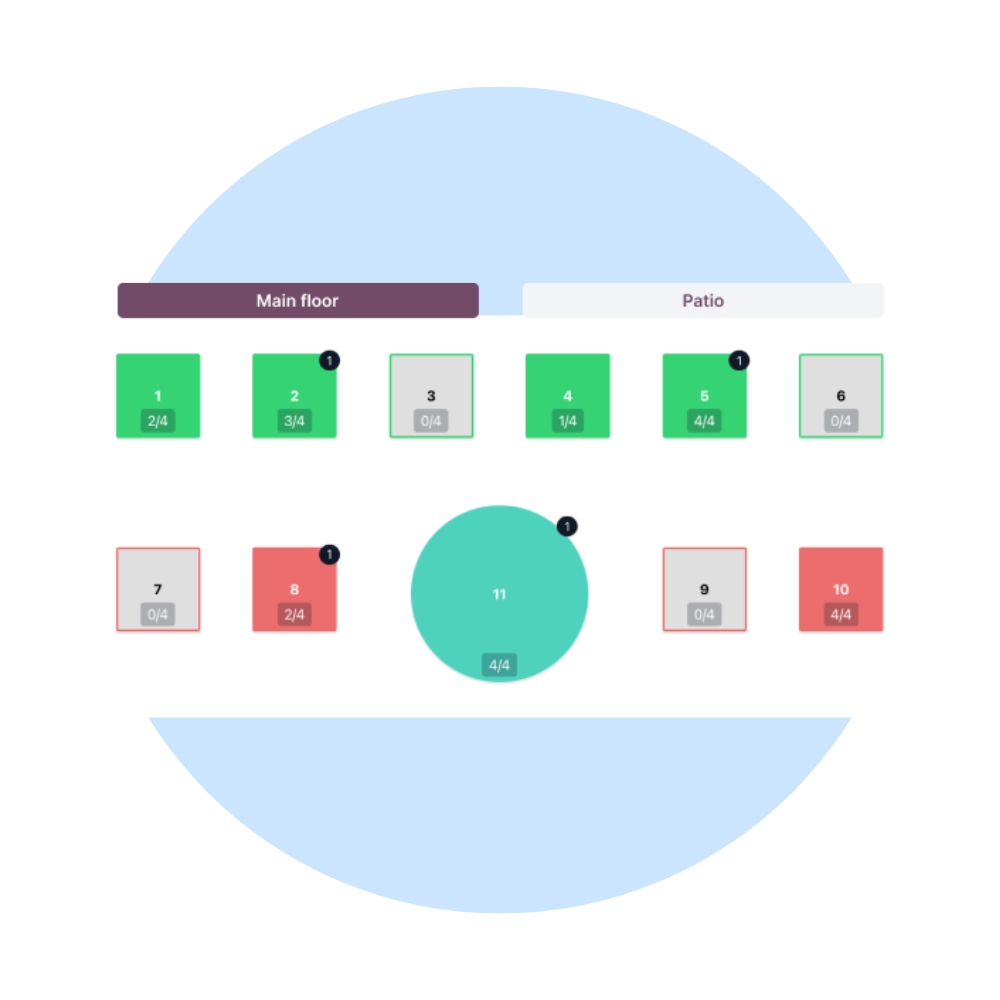

Run your restaurant smoothly with Odoo POS Restaurant. We help restaurants, cafés, and food chains manage table orders, kitchen operations, billing, and inventory from a single, powerful POS system.
We configure Odoo POS Restaurant to match your dining workflow, menu structure, and service style. Integrate seamlessly with Kitchen Display Systems (KDS), Inventory, Accounting, and online ordering.


Our restaurant POS implementation ensures faster order taking, smooth kitchen coordination, accurate billing, and real-time visibility into sales and stock.
Manage dine-in tables, reservations, and order status visually.
Send orders directly to the kitchen in real time.
Take orders quickly with touch-friendly screens.
Easily split bills by items or guests.
Track ingredient and stock usage automatically.
Continue serving customers even without internet.
We help restaurants optimize POS performance, reduce order errors, and improve service speed as your business grows.
